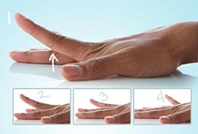

ေလ့က်င့္ ခန္း( ၆)

၆။ လက္ ေခ်ာင္း မ်ား မတင္ ျခင္း
လက္ ကို စားပြဲ ေပၚတင္ ပါ။
ျပီး ေနာက္ လက္ ညိဳးကို အ ေပၚေျမွာက္ ပါ။
ျပန္ ခ်၊ လက္ ခလယ္ ကို အ ေပၚ ေျမွာက္၊ ျပန္ ခ်၊ လက္ သူၾကြယ္ ကို အ ေပၚ ေျမွာက္၊ ျပန္ ခ်၊ လက္ သန္း ကို အ ေပၚ ေျမွာက္၊ ျပန္ ခ်။
လက္ တစ္ ေခ်ာင္း စီကို ၂ၾကိမ္ - ၃ၾကိမ္ ခန္႕ ျပဳလုပ္ ပါ။